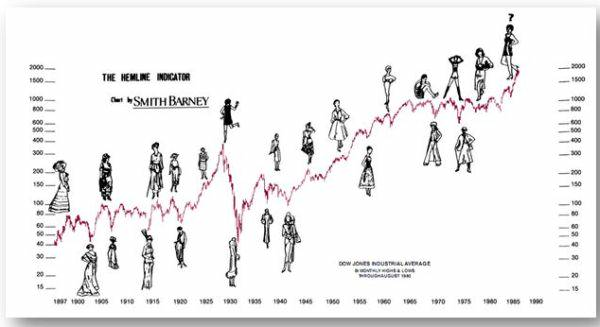
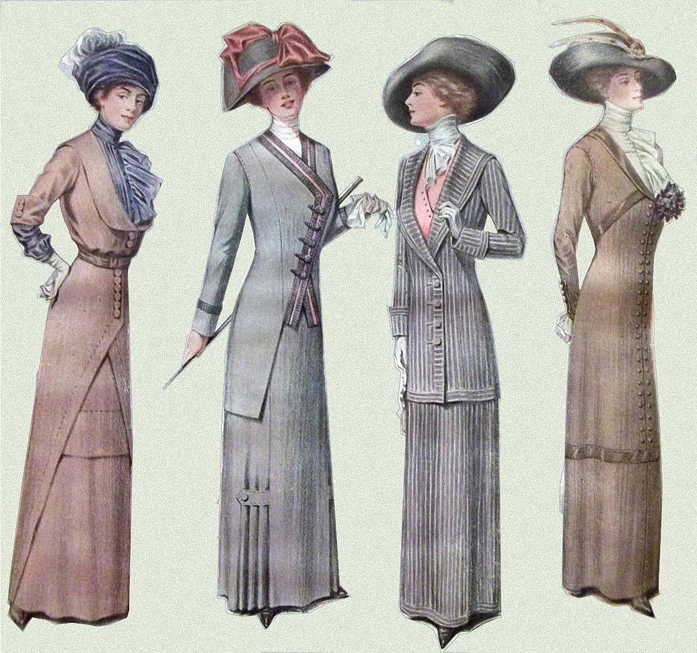
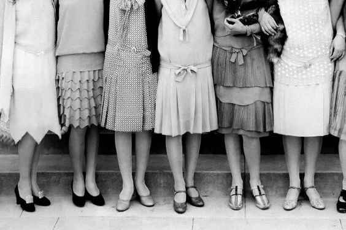
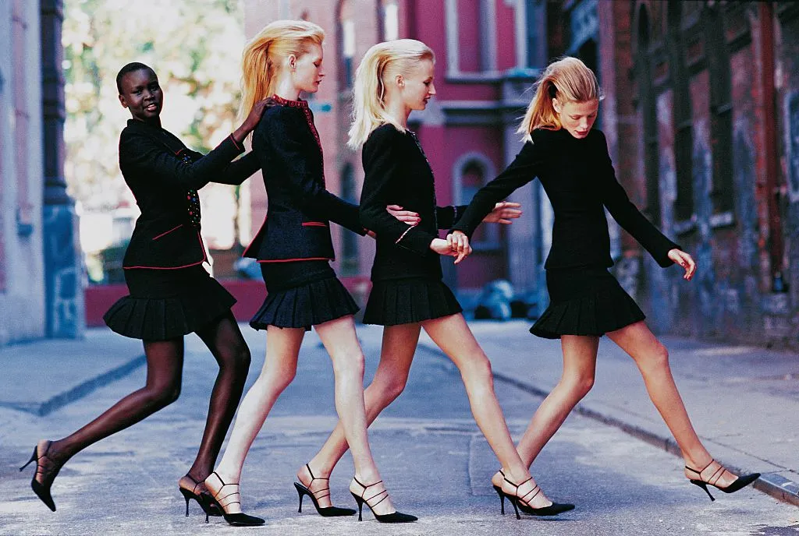
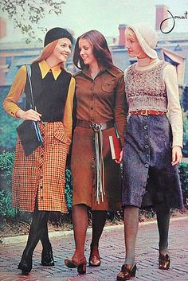

The Hemline Index: La Teoría Económica de la moda.
La moda ha sido un reflejo de la sociedad durante muchos años, representa la manera en como vivimos.
A lo largo de la historia la moda ha formado parte importante de nuestra evolución como Sociedad, de cómo expresamos los distintos aspectos sociales, políticos y económicos han impactado a la humanidad.
Hemline Index, Indice del largvo de tu falda. ¿Qué es?
Es una teoría propuesta por el economista George Taylor en 1926. Esta teoría esta sustentada sobre el supuesto de la relación entre la sociedad con respecto a la moda, con respecto a la economia.

George Taylor propuso que a mayor largo de falda existia crisis economica, mientras que cuando las faldas se acortaban había Bonanza Económica.
Algunos de los claros ejemplos que sustentan esta teoría:
- Años 20: Al terminar los 1910, las faldas y corsets quedaron en el olvido y surgieron las famosas "flappers" quienes usaban las faldas una mano abajo de la rodilla. Esto debido a que con el final de la Primera Guerra Mundial la economía comenzó a equilibrarse.
- Años 30-40: Durante esta epóca las faldas volvieron a alargarse debido a la gran depresión, dando como resultado el "New Look" de Christian Dior en 1947.
- Años 60: Con la llegada de 1960 la economía vuelve a estabilizarse y con ello las faldas se acortaron entrando así la "mini falda".
- Años 70-80: En está época con el surgimiento de el capitalismo y el encarecimiento del petróleo, el mundo entra en recesión economica dando como resultado que las faldas comenzaran a alargarse de nuevo.
- Años 20 y 10: 
- Años 30 y 40:

- 
- Años 70 y 80: